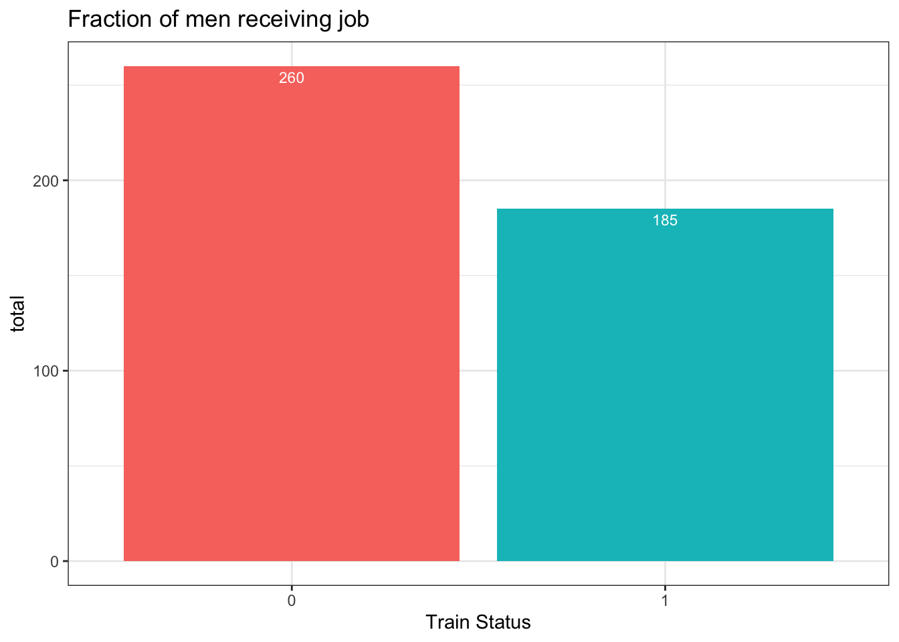
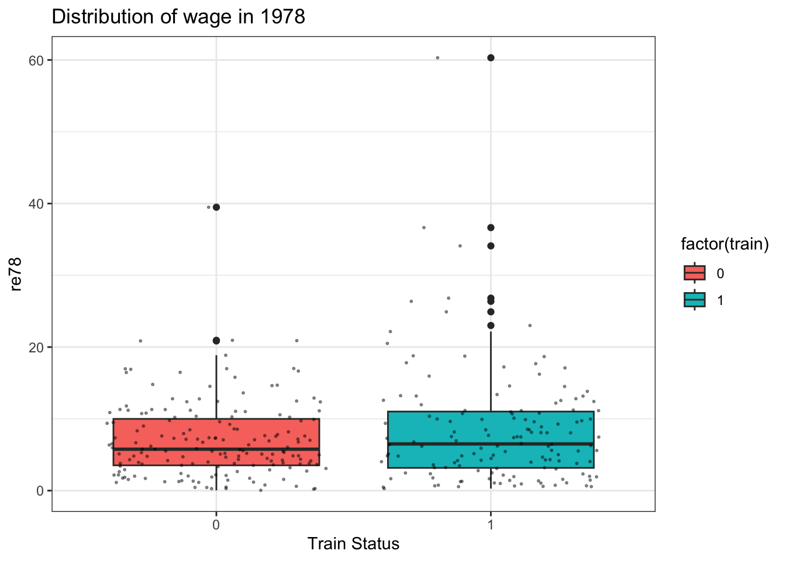
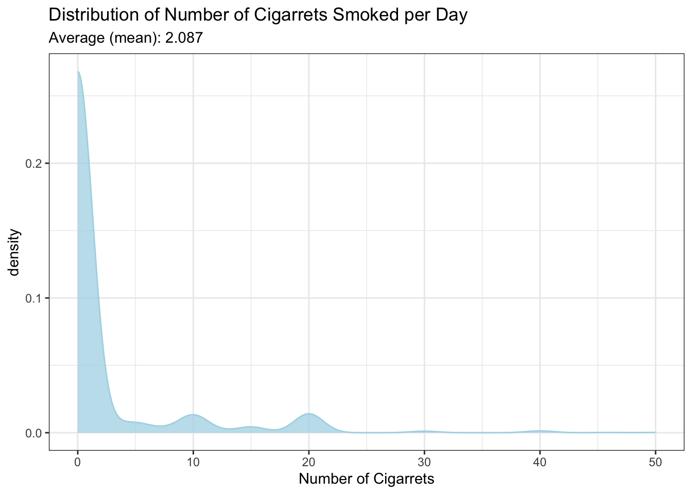

Suppose your university asks you to investigate the relationship between weekly hours spent studying (study) and weekly hours spent working (work).
Does it make sense to characterize the problem as inferring whether study "causes" work or work "causes" study? Explain.
No, it is not. The decision that someone chooses to study depends on several factors not only work but also the time to do exercise, having fun, and financial capability.
If you were to investigate the effect of studying on grade performance in terms of a simple linear regression model, how would you do so? After having found an associated \(β\) with study, would we then have uncovered a causal relationship?
Migh or migh not be. The correlation factor (\(β\) ) does not tell us the causal relationship. It only tells the association of study and work.
Problem 2.1
Let \(kids\) denote the number of children born to woman \(i\)., and let \(educ\) describe the years of education undergone by \(i\). A simple model relating fertility to years of education can be put forth as \(kids=β_{0}+β_{1}educ+u\),where \(u\) is the unobserved error.
What kinds of factors are contained in \(u\) ? Are these likely to be correlated with the level of education?
There are several unobservable factors which might affect the kids that a woman that also correlates with the level of education such as the wage (more financially prepared), age (related to the fertility).
Will a simple regression analysis uncover the ceteris paribus effect of education on fertility? Explain.
It might be if we let other factors are constant by choosing random sample of women from the population. However, in this case, since we know there are several factors which could affect \(kids\) but correlated with education, we can not use the given simple regression.
Problem 2.2
The following table contains the ACT scores and the GPA (grade point average) for eight college students. Grade point average is based on a four-point scale and has been rounded to one digit at the decimal.
Student
GPA
ACT
1
2.8
21
2
3.4
24
3
3.0
26
4
3.5
27
5
3.6
29
6
3.0
25
7
2.7
25
8
3.7
30
Estimate the relationship between \(GPA\) and \(ACT\) using OLS; that is, obtain the intercept and slope estimates in the equation\(\hat{GPA} = \hat{\beta_{0}} + \hat{\beta_{1}}ACT\).Comment on the direction of the relationship. Does the intercept have a useful interpretation here? Explain. How much higher is the \(GPA\) predicted to be if the \(ACT\) score is increased by five points?
paste0("The correlation coefficient of ACT: ", beta_1)
[1] "The correlation coefficient of ACT: 0.102"
From the above result, we can see that the intercept is 0.568. It means that if the ACT score is zero, the GPA is 0.568 which is relative low, hence it makes sense.
In addition, if the ACT increase by 5 pointes, than the GPA increase by (5*0.102) = 0.51.
Compute the fitted values and residuals for each observation, and verify that the residuals (approximately) sum to zero.
We can see from above result that the sum of residuals is pretty low (0.042) which validate the OLS assumption.
What is the predicted value of \(GPA\) when \(ACT=20\) ?
y_hat_20 =estimated_model(20)paste0("Predicted GPA when ACT = 20: ", y_hat_20)
[1] "Predicted GPA when ACT = 20: 2.608"
How much of the variation in \(GPA\) for these eight students is explained by \(ACT\)? Explain. It should be the \(R^{2} = SSE/SST\). We can get it from our summary model:
We can see that the model can explained 57.7% the total variance.
Problem 2.3: The effectiveness of job training programs
Load the data set jtrain2 related to a job training experiment in the 1970's. This data was used in a paper by R.J. Lalonde (1986), "Evaluating the Econometric Evaluations of Training Programs with Experimental Data," American Economic Review 76, 604-620. Professor Lalonde obtained the data from the National Supported Work Demonstration job-training program conducted by the Manpower Demonstration Research Corporation in the mid 1970s. Training status was randomly assigned. Look at the description of the data set and answer the following questions
library(wooldridge)jtrain2_data = jtrain2
What is the structure of this data set (see Wooldridge (2018), section 1.3)? Are the data observational or experimental? What do the observations (rows) in this data set represent?
It is stated from the documentation that this data is experimental. The rows represent the worker in the experimental setting.
Use the indicator variable \(train\) to demonstrate the fraction of men receiving job training. Visualize and compare the number of men receiving job training and the number of men not receiving job training using a bar plot.
ggplot(jtrain2_data |>group_by(train) |>summarise(total =n()), mapping =aes(x =factor(train), y = total)) +geom_bar(mapping =aes(fill =factor(train)), stat ="identity",show.legend =FALSE) +geom_text(mapping =aes(label = total), size =3, vjust =1.5, colour ="white") +theme_bw() +labs(title ="Fraction of men receiving job",x ="Train Status")

From the figure above, the not-rained workers are 260 while the trained workers are 185. Hence the trained percentage is 41.57%.
The variable \[re78\] is earnings from 1978, measured in thousands of 1982 dollars. What is the unconditional sample mean of \(re78\)? What is the conditional sample mean of \(re78\) among those receiving job training? What is the conditional sample mean of \(re78\) among those not receiving job training? Are the salaries in the two groups very different? Use a box plot to visualize and compare the distribution of \(re78\) for the two groups
paste0("Unconditional sample mean of re78: ", round(mean(jtrain2_data$re78),3))
[1] "Unconditional sample mean of re78: 5.301"
paste0("Conditional sample mean of re78 among receiving training: ", round(mean(jtrain2_data |>filter(train==1) |>pull(re78)),3))
[1] "Conditional sample mean of re78 among receiving training: 6.349"
paste0("Conditional sample mean of re78 among not receiving training: ", round(mean(jtrain2_data |>filter(train==0) |>pull(re78)),3))
[1] "Conditional sample mean of re78 among not receiving training: 4.555"
ggplot(jtrain2_data |>filter(unem78==0), mapping =aes(x =factor(train), y = re78)) +geom_boxplot(mapping =aes(fill =factor(train))) +geom_jitter(color="black", size=0.4, alpha=0.4) +theme_bw() +labs(title ="Distribution of wage in 1978",x ="Train Status")

The variable \(unem78\) is an indicator of whether a man is unemployed or not in 1978. What fraction of the men who received job training are unemployed? What about the men who did not receive job training?
We can see that 20.7% (92) of the unemployed person in 1978 were not trained and the other 45 (32.8%) are not trained.
Based on your answers to questions 3 and 4, does it seem that the job training program was effective? What would make your conclusions more convincing?
From the question 4, it is compiling that the mean of the wage from the trained is higher than untrained worker. However, this mean difference should be taken carefully since the majority that trained workers were unemployed. We can make the conclusion better by excluding the unemployed workers.
Problem 2.4: Birth weight and smoking habits
Start by loading the data set bwght, which is related to the smoking habits of mothers and the birth weight of their children. Look at the description of the variables and answer the following questions.
# Load databwgs_data = bwght
What is the structure of this data set (see Wooldridge (2018), section 1.3)? Are the data observational or experimental? What do the observations (rows) in this data set represent?
The data should be observational since it came from a survey. Each of the observation is a woman who gave birth to children.
How many women (observations) are in the sample and how many report smoking during pregnancy?
paste0("Number of observations: ", length(bwgs_data$faminc))
[1] "Number of observations: 1388"
paste0("Smoking during pregnancy: ", length(bwgs_data[bwgs_data$cigs!=0,]$cigs))
[1] "Smoking during pregnancy: 212"
What is the average number of cigarettes smoked per day? Illustrate the distribution of this variable graphically using a histogram (or similar). Is the average a good measure of the "typical" woman in this case? Explain.
ggplot(data = bwgs_data, mapping =aes(x = cigs)) +geom_density(fill ="lightblue", alpha =0.75, color ="lightblue") +theme_bw() +labs(title ="Distribution of Number of Cigarrets Smoked per Day",subtitle =paste0("Average (mean): ", round(mean(bwgs_data$cigs),3)),x ="Number of Cigarrets")

The average of the smoked cigarettes per day is 2.087. However, this average can not be used as good indicator since lots of women were not smokers (~84%) which had 0 number of smoked cigarettes per day. The showed average tends to “deviate” from the majority due to the property of the mean. We can make it better with “median” or excluding the non-smokers.
Among women who smoked during pregnancy, what is the average number of cigarettes smoked per day? How does this compare with your answer from question 3, and why?
mean_smoked_women <- bwgs_data |>filter(cigs!=0) |>summarise(mean =mean(cigs)) |>pull(mean)paste0("Average (mean) number of cigarettes smoked per day for smoked women: ", round(mean_smoked_women ,3))
[1] "Average (mean) number of cigarettes smoked per day for smoked women: 13.665"
From the result above, we can see that the average value is a way higher than the previous result. It is because we excluded the majority of the women from our sample which were non-smokers (80%).
Estimate the simple regression model: \(bwght=β_{0}+β_{1}cigs+u\) ,where \(u\) is the unobserved error. What are the estimates of \(β_{0}\) and \(β_{1}\)?
bwght_model <-lm(data = bwgs_data, formula = bwght ~ cigs)bwght_model_summ <-summary(bwght_model)bwght_model_summ$coeff[,1]
We can see that when \(cigs=20\), the predicted birth weight is smaller than \(cigs=0\)(non-smoker) which makes sense.
Does this simple regression necessarily capture a causal relationship between the child's birth weight and the mother's smoking habits? Explain.
No it does not. There are several reasons for it: First, we can see that the \(R^{2}\) is relatively small (0.02) which indicates that the model poorly captures the variation of samples. Next, there might be also difference in the variances of the birthweight based on the number of smoked cigarettes per day, which indicates heteroscedacity (violate SLR.5). In addition, there might be several other factors which effect the birth weight of a beby such as the nutrition intake, age of the women which were not included on the model.
To predict a birth weight of 125 ounces, what would \(cigs\) have to be? Comment.
bwgs_model_inverse <-function(y) { b_0 = bwght_model_summ$coeff[1,1] b_1 = bwght_model_summ$coeff[2,1] x = (y - b_0)/b_1return(round(x,3))}paste0("Based on the model, to predict 125 ounces of birth weight, the number of cigs should be: ", bwgs_model_inverse(125))
[1] "Based on the model, to predict 125 ounces of birth weight, the number of cigs should be: -10.176"
We can see that from our model, to get relatively high birth weigth (125 ounces) we need to have ~-10 cigarettes smoked per day which does not make sense. We can only have 0 cigarettes minimum per day (non-smoker). This weird result might indicate that our model is not a good model.